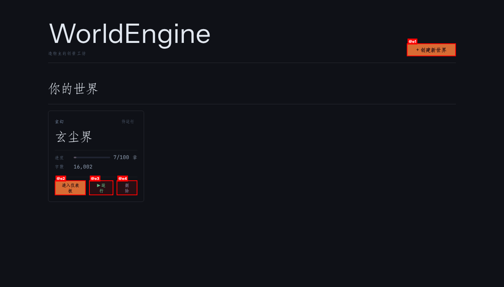

world-novel 是一个多 Agent 协作的长篇小说自动生成系统。
每个角色拥有独立意识、记忆与情感，在 AI 驱动的世界中自由生长。
每个组件都经过精心设计，让 AI 角色拥有真实的独立意识和情感
每个角色拥有独立思考、对话、行动与反应的能力。情景记忆系统让角色记住每一次交互，情感状态驱动其行为决策，创造出具有真实个性的虚拟生命。
与掌握全部角色记忆的 AI 史官对话，随时指导故事走向、分析剧情发展。史官了解每个角色的内心世界，是你创作旅程中最可靠的参谋。
God Agent 在章节间审视整个世界走向，根据故事发展触发世界事件。自然灾害、政治变革、命运交织——让故事充满不可预测的戏剧张力。
自动规划伏笔的埋设与回收，跨章节追踪剧情线索。系统智能地在适当的位置埋下线索，并在最合适的时机揭示真相，打造精心编织的故事网。
通过「是什么」「从何来」「往何去」三个哲学命题定义世界本质。这三个根本问题决定了世界的规则、历史轨迹和最终命运，是一切故事的基石。
一键将生成的小说导出为 Markdown 或 JSON 格式。完整的章节结构、角色对话、场景描述，全部整理成整洁的文档，方便后续编辑和发布。
生成过程中随时暂停，修改角色设定、调整世界规则或重写剧情走向，然后继续生成。创作控制权始终在你手中。
兼容 OpenAI、Anthropic、本地模型等多种 LLM 后端。灵活切换模型，在不同成本和性能之间找到最佳平衡点。
从创世命题到最终成书，每个阶段都精心设计以确保故事的质量与连贯性
基于三命题创建设定，生成地理、历史、文化、种族等世界基础架构
创建具有独立人格、背景故事、动机和关系的 AI Agent 角色群
智能规划故事主线、支线与伏笔网络，构建章节级别的叙事蓝图
角色 Agent 基于各自记忆和情感自主对话与行动，产生真实交互
AI 史官综合全部角色记忆，将交互编织成连贯的叙事章节
God Agent 审视世界走向，触发重大事件确保故事的戏剧张力
将生成的内容整理为完整的小说章节，支持 Markdown / JSON 格式导出，方便后续编辑和发布
多层次记忆架构让每个角色拥有完整的过去，驱动真实的情感与决策
记录每一次对话、每一个场景，角色记得自己说过什么、经历了什么
记录角色对其他角色的情感变化，喜欢、憎恨、信任、怀疑——一切都有迹可循
记录世界大事、地理发现、历史变迁，角色共享同一世界认知
系统层面追踪所有伏笔的埋设与回收状态，确保每个线索都有归宿
world-novel 的记忆系统模拟人类记忆的工作方式——不是冷冰冰的数据检索，而是与情感、情境紧密相连的回忆。当一个角色再次遇到曾经背叛过他的人时，系统会自动唤起那段记忆，并影响角色的情感状态和对话选择。
重要记忆被强化存储，次要记忆随时间自然淡化
相似情感场景触发相关记忆，让回忆更加自然
角色记忆跨章节保持一致，故事连贯性得到保证
无需复杂配置，从世界设定到小说生成，简洁直观
通过「三命题创世」定义你的世界——是什么、从何来、往何去。设定世界观、种族、魔法体系等核心规则。
启动生成引擎，观察角色自主演绎。随时暂停，与史官对话调整方向，让故事朝着你期望的方向发展。
一键导出完整的小说文件，Markdown 格式便于编辑排版，JSON 格式方便二次开发和技术处理。
从世界设定到章节生成，全流程可视化操控

首页书架 - 管理你的所有小说世界
world-novel 是开源项目，免费使用。每一个 Star 都是对开发者的最大鼓励，也是对项目未来的投资。